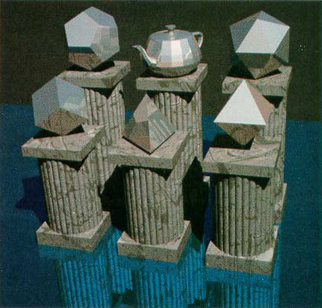
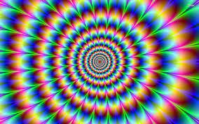
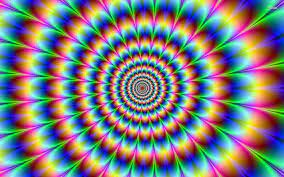

"The Six Platonic Solids" created by Jim Arvo and David Kirk in 1987

- The image created is NOT similar to the famous picture; I've tried to add different image texture and
procedural texture for the final.
-
The left-most sphere has a water texture with a pink directional light at the position of the Cat lamp.
-
The pedestals are made using procedural texturing to imitate wood. Credits to
The Book of Shaders.
The perlin noise code was used from webgl-noise as suggested
by the "Book of Shaders"
-
The cone with colorful pattern has a image shader with shiny reflective surface using the "lamp-light" as the
directional light.
-
The water is a cube wrapped with an image of water. The top portion is lighter than the bottom part to give an
illusion of depth, this was done using light position and directional shadows.
|
 
